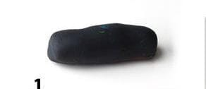
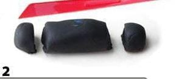
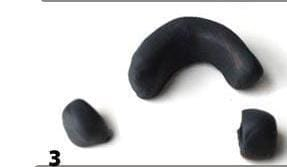
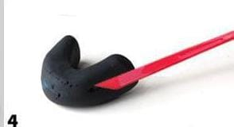

Vamos a empezar
Paso 1 Hacer un poco de arcilla en forma de rectangular

Paso 2 Partir el pedazo en 3 partes, la primera parte en una porción chica, la segunda parte que sea la más grande y la tercera parte en un pedazo mediano

Paso 3 Con la parte de en medio hacer una dobles

Paso 4 Cortar de en medio de ambos lados, que quede curvado para que esté sea el cuerpo del gato

Paso 5 Con las dos partes restantes hacer una bolita para la cabeza del gato y la otra en forma de una lombriz para su colita del gato

Paso 6 Juntar el cuerpo con la cabeza y la colita, en la parte de arriba la cabeza hacer dos poquitos para que estos sean sus orejitas y en la cola hacer un poco de espiral